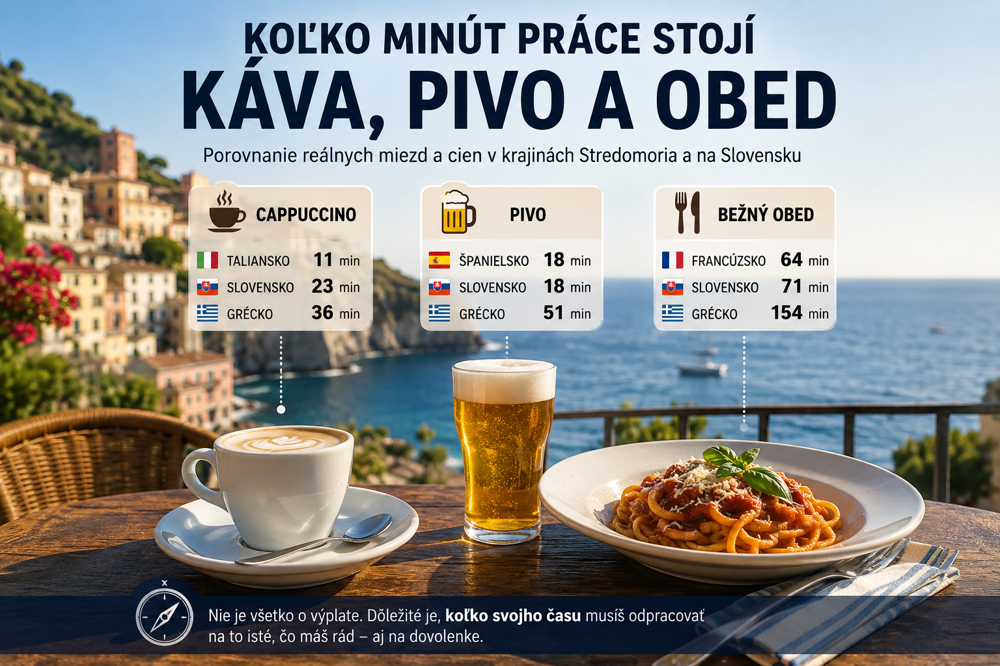

Nový článok
Pridané 10. 8. 2026, 23:49
Talian pracuje na kávu 11 minút, Slovák 23. A Grék? Prekvapivé porovnanie Stredomoria
Koľko pracovného času stojí cappuccino, pivo a obed? Porovnanie cien cez výplatu ukáže Stredomorie inak.
Čítať článok